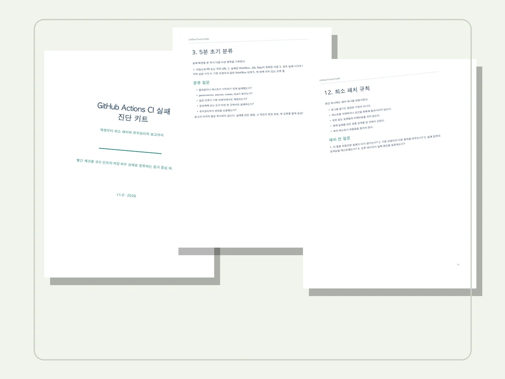

Korean ebook
CI 실패 진단 가이드
초기 분류, 기본 브랜치 비교, 로컬 재현, 실패 소유권, 최소 패치, 회귀 테스트, 유지관리자 보고까지 18개 실무 섹션입니다.
PDF 19쪽
미리보기
19쪽 한국어 실무 전자책 + 바로 쓰는 템플릿
GitHub Actions 실패를 무작정 고치기 전에 코드 회귀, 러너와 워크플로, 계정 권한, 외부 장애로 분류하는 증거 중심 진단 절차입니다.
A focused Korean playbook for evidence-led GitHub Actions failure triage.

다운로드 구성
전체 상품은 PDF와 Markdown 템플릿을 하나의 ZIP으로 전달합니다. 공개 미리보기는 앞 6쪽이며 유료 전체 파일은 공개 저장소에 올리지 않습니다.
Korean ebook
초기 분류, 기본 브랜치 비교, 로컬 재현, 실패 소유권, 최소 패치, 회귀 테스트, 유지관리자 보고까지 18개 실무 섹션입니다.
Incident template
저장소, Run, Job, 최초 오류, 기본 브랜치 비교, 재현 명령과 다음 행동 소유자를 한 문서에 남깁니다.
Triage checklist
코드 수정 전 확인할 실행 상태, 러너, 권한, CLA, 외부 서비스, 중복 작업과 검증 증거를 빠르게 점검합니다.
결제 전에 확인
표지, 실패 소유권 개념, 포함과 제외, 5분 초기 분류, 증거 수집 시트, 소유권 결정표까지 이메일 입력 없이 읽을 수 있습니다.
공개 문의 3단계
문체, 깊이, 범위가 필요한 내용과 맞는지 확인합니다.
운영체제와 호환성 질문만 남기고 비밀과 로그 원문은 제외합니다.
지원 결제 경로, ZIP 전달 방식과 지원 범위를 확인한 뒤 진행합니다.
출시가 USD 19
호환성과 전달 방식을 먼저 확인하고, 확인 전에는 결제를 요청하지 않습니다.